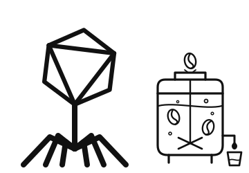

{{
selectedPost.cat }}
{{ selectedPost.date }}
{{ selectedPost.title }}
{{ blk.text }}

BioScience Station is a research group in the Department of Biological Engineering, Hanoi University of Science and Technology, led by Dr. Nguyễn Thanh Hoà. Most of the people at the bench are undergraduates. This is where they run their first experiments, and for many it becomes the first step of a longer path in science.
Our work ranges across fermentation, from coffee to lactic cultures, and the search for new antibacterial and antifungal agents. Most of it is still early, and we aim to take it further: into patents, into more STEM classes for school students, and into the groundwork for applications in food, health, and biomedicine.
{{ para }}
{{ n.blurb }}
READ MORE →{{ blk.text }}
We welcome students who are passionate about science and eager to gain hands-on research experience. In our lab, students can participate in research competitions, attend conferences, contribute to papers, and carry out their bachelor's thesis projects.
If you'd like to join us, get in touch.
{{ lightboxCaption }}
Peer-reviewed articles and preprints from the Station and our collaborators.
{{ sec.sub }}